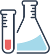
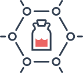
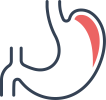
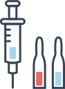

-
Москва, адреса клиник
Пн–Вс: 09:00–22:00
-
отделения
назад
- Вызов врача на дом
- Кардиология
- Вызов врача на дом
-  Комплексные обследования. Диспансеризация
- Неврология
- Комплексные обследования. Диспансеризация
-  Комплексные программы
- Эндокринология
- Комплексные программы
- Терапия
- ОФтальмология
- Терапия
-  Вакцинация
-  Гастроэнтерология
- Вакцинация
- Оформление медицинской документации
- стоматология
- Оформление медицинской документации
-
анализы
назад
- Вызов врача на дом
- Кардиология
- Вызов врача на дом
- Комплексные обследования. Диспансеризация
- Неврология
- Комплексные обследования. Диспансеризация
- Комплексные программы
- Эндокринология
- Комплексные программы
- Терапия
- ОФтальмология
- Терапия
- Вакцинация
- Гастроэнтерология
- Вакцинация
- Оформление медицинской документации
- стоматология
- Оформление медицинской документации
- Врачи
- график работы
- цены
- Программы
- статьи
- Новости и акции
- Контакты